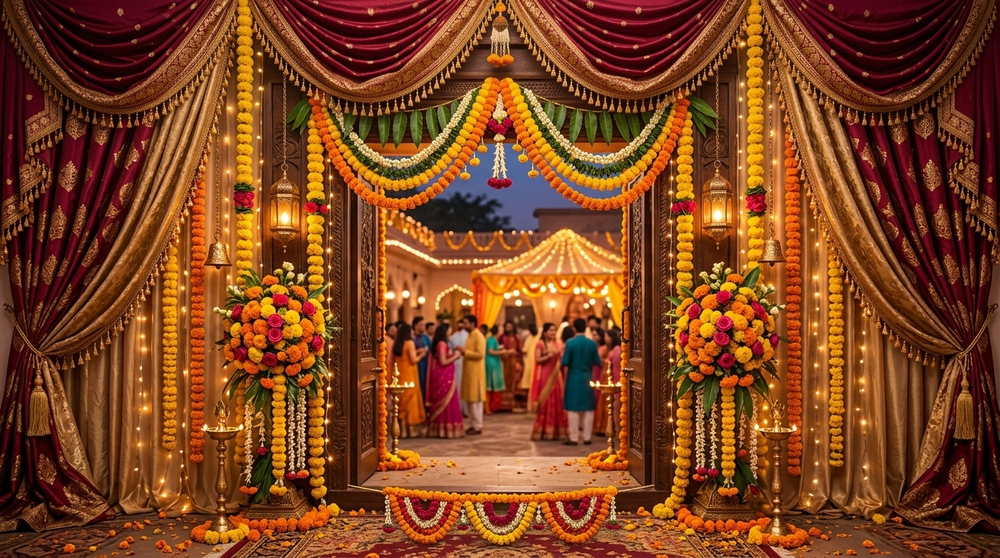

Traditional Punjabi Weddings 101
The Story Behind a Punjabi Wedding: Traditions, Rituals, and History
By Sukhman Sandhu
Welcome to Punjabi Wedding Traditions
Punjabi weddings are renowned worldwide for their vibrant colors, energetic music, joyful dance, and deep-rooted cultural customs. Beyond the grand celebrations lies a rich heritage of rituals that bring two families and communities together.
This website explores the entire journey of a traditional Punjabi wedding—from the initial pre-wedding negotiations and lively pre-wedding functions to the sacred wedding day ceremony and emotional post-wedding celebrations.
A Note on Cultural Diversity: Punjabi wedding customs can vary greatly depending on a family's religious background (Sikh, Hindu, Muslim, or Christian), regional origin, and personal family traditions.
